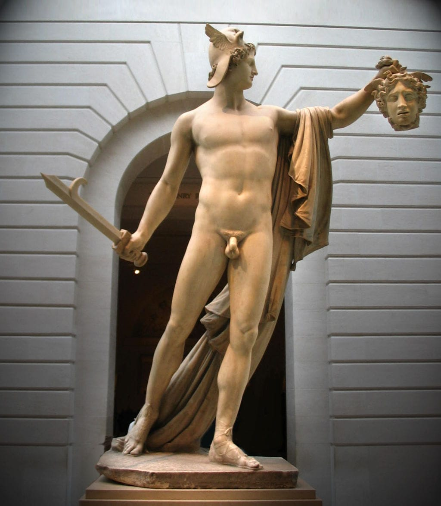

Información General
Ubicación: Ciudad del Vaticano
Horario: 9:00 - 18:00
Precio: €20
Colecciones Destacadas
- Laocoonte y sus hijos
- Apollo sauroktonos (vatican)
- Perseus with the head of the gorgon medusa
Historia y Arquitectura
Fundados en el siglo XVI por los papas, los Museos Vaticanos reúnen una de las colecciones de arte más importantes del mundo. Destaca la arquitectura renacentista y el trabajo de artistas como Miguel Ángel y Rafael.

Obra: Laocoonte y sus hijos

Obra: Apollo sauroktonos

Obra: Perseus with the head of the gorgon medusa